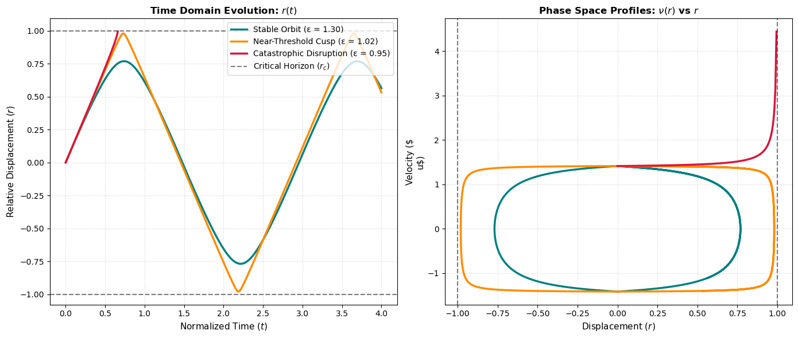
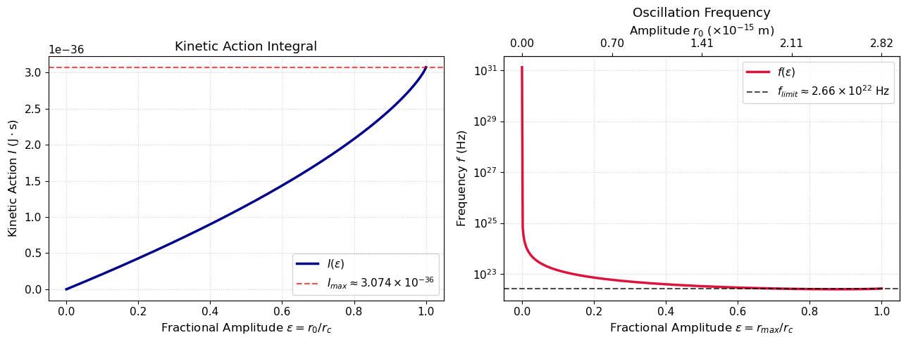
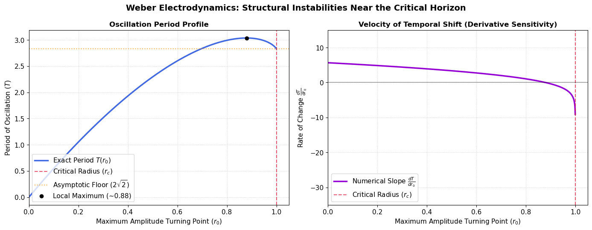

We review Weber’s calculation of periods of oscillations inside the critical radius \(r < r_c\). In particular Weber predicts the \((-1,-1)=(-2)\) molecule oscillates at a frequency of \(1.330 imes 10^{22}\) cycles per second, and energetic kinetic action \(I=3.074 imes 10^{-36}\) Joule-secs per cycle. The action \(I\) is approximately \(215\) times smaller than Planck’s constant \(h\). Everything is derived from the Conservation of Energy and Weber’s Hamilton \(H = T+U\) defined for two-body systems.
Author
JHM
Published
May 28, 2026
N.B. We follow Weber’s convention that \(\sqrt{2}c = c_{\text{Einstein}}= 299,792,458\) meters per second.
Weber and Planck Bohr
We continue to study Weber electrodynamics of the atom and especially inside the critical radius\(r < r_c\). Weber predicts the existence of a critical radius \[r_c:=\frac{\alpha}{\mu c^2} \approx 5.6286 \times 10^{-15} \text{metres}\] such that electrons at distances \(r < r_c\) experience negative effective inertial mass and become mutually attractive. Recall Weber’s critical radius \(r_c:=\alpha / \mu c^2\) where \(\alpha:=\frac{e^2}{4 \pi \epsilon_0}.\) For the electron \(e^{-}\) we find \[\alpha = (9.0 \times 10^9) \times (1.60 \times 10^{-19})^2 \approx 2.304 \times 10^{-28}.\]
In this post we discuss Weber’s calculation of the oscillations inside the critical radius \(r < r_c\). We also compute the Weber-Planck kinetic action integrals \(I=\int_{\text{orbit}} T dt\), and Weber’s key prediction that \[I_{max} = 4 \alpha / \sqrt{2}c \approx 3.074 \times 10^{-36} \text{ Joule seconds per cycle.}\] This value is approximately \(215.54\) times smaller than Planck’s constant \(h \approx 6.62607015 \times 10^{-34}\) Joule seconds per cycle.
Weber-Hamilton Electrodynamic Energy
Consider the two-body Weber-Hamiltonian \(H\) defined by \[H =E = \frac{1}{2} \mu \nu^2 + \frac{\alpha}{r}(1-\frac{\nu^2}{2c^2}).\] In [https://jhmlabs.github.io] we introduced the Weber-Hamilton equations of motion \[\nabla_\nu H = (\mu - \frac{\alpha}{c^2 r}) \nu, \quad \quad -\nabla_r H = (\mu - \frac{\alpha}{c^2 r}) \dot{\nu}.\] The first equation defines the effective inertial mass, while the second equation defines the equation of motion and is analogous to Newton’s Second Law. The choice of scalar \(-\frac{1}{\mu}(1 - \frac{r_c}{r})^{-1}\) ensures the motion satisfies Weber’s Conservation of Energy.
N.B. The above gradients are defined assuming \(r, \nu\) are held constant during the partial differentiation. The Hamiltonian \(H\) is defined on the relational variables \(r, \nu\) instead of the usual classical \(p,q\) variables.
Consider the Weber-Hamilton equation of motion \[\mu^{-1}( 1- \frac{r_c}{r})^{-1} \nabla_r H = \dot{\nu}.\] We compute \[\nabla_r H = (\frac{-\alpha}{r^2}) (1-\frac{\nu^2}{2c^2}), \] assuming that the radial velocity \(\nu\) is held constant during the differentiation. For a given orbit and energy level \(E=H\), we obtain the following expression for \(\nu^2/2c^2\), namely \[1-\frac{\nu^2}{2c^2} = \frac{1-\frac{E}{\mu c^2}}{1-\frac{r_c}{r}}.\] Consequently we find \[\dot{\nu} = \mu^{-1}. ( 1- \frac{r_c}{r})^{-1}.(\frac{\alpha}{r^2}). (\frac{1-\frac{E}{\mu c^2}}{1-\frac{r_c}{r}}).\]
Definition: The amplitude\(r_0\) of an oscillating system as the radius of maximal separation between the particles. The amplitude is characterized by \(r'=\nu=0\). Conservation of Energy implies \(E =\frac{\alpha}{r_0}\) and therefore \(r_0=\alpha/E\).
Now Weber introduces the identity \[\nu^2 = 2 \int_{r_0}^r \frac{1}{\mu}. \frac{1}{1-\frac{r_c}{r}} \frac{\alpha}{r^2} \frac{1-\frac{E}{\mu c^2}}{1-\frac{r_c}{r}}. dr, \] where \(r_0\) is defined such that \(\nu=0\).
The above integral is evaluated directly using the substitution \(\xi := 1 - \frac{r_c}{r}\), with \(d\xi = -\frac{r_c}{r^2} dr\). The integral defining \(\nu^2\) is then equal to \[2 \int_{\xi_0}^\xi \frac{1}{\mu} \frac{\alpha}{r_c} \frac{1}{\xi^2}(1-E/\mu c^2). d\xi.\]
This is a rational function of \(\xi\), namely \[\nu^2 = 2 c^2 \int_{1-\frac{r_c}{r_0}}^{1-\frac{r_c}{r}} \xi^{-2} (1-E/\mu c^2)d\xi .\] We explicitly integrate to obtain \[\nu^2 = 2c^2 (1-E/\mu c^2) (\frac{1}{1-\frac{r_c}{r_0}} - \frac{1}{1-\frac{r_c}{r}}).\] This equation gives an implicit relation between \(r, \nu\) and \(r_0\). Given the particle state \(r, \nu\) we can derive the maximum amplitude \(r_0\). Conversely, if we know \(r, r_0\) (and \(\nu_0=0\)) then we can compute \(\nu\). This corresponds to the tables calculated by Weber (Assis 202X, 4:13.6, pp.142).
Weber’s Period of Oscillation
We now review Weber’s study of oscillations of electric molecules. The goal is to estimate and compute the frequencies of oscillations inside the critical radius \(r < r_c\).
Consider the energy equation where \[\nu^2 = \frac{2(E-\alpha / r)}{\mu - \frac{\alpha}{c^2 r}}.\] Rearranging we find \[\nu^2 = 2c^2 \frac{E/\mu c^2 - r_c/r}{1-r_c/r}.\] Since \(\nu = dr/dt\) we find \[dt= \frac{1}{\sqrt{2}c}\sqrt{\frac{1-r_c/r}{E/\mu c^2 - r_c/r }} dr = \frac{1}{\sqrt{2}c} \sqrt{\frac{r-r_c}{\epsilon r - r_c}} dr \] where \(\epsilon:=E/\mu c^2\).
The period of oscillation \(T\) is obtained by integrating \(dt = \frac{1}{\sqrt{2}c} \sqrt{\frac{r-r_c}{\epsilon r - r_c}} dr\) over a period, namely \[T =\frac{4}{\sqrt{2}c} \int_{r_0}^0 \sqrt{\frac{r-r_c}{\epsilon r - r_c}} dr.\] This expression can actually be integrated via explicit antiderivatives. We find \[T = \frac{2 \sqrt{2}}{c} r_c (\frac{1}{\epsilon} + \frac{\epsilon-1}{\epsilon^{3/2}} \log( \frac{\sqrt{\epsilon}+1}{\sqrt{\epsilon -1}} )).\]
This yields the obvious approximation \[T \approx \frac{2 \sqrt{2}}{c} \frac{r_c}{\epsilon} = \frac{4}{\sqrt{2} c} r_0 = \frac{4 \alpha}{\sqrt{2} c E}.\]
Here is another alternative derivation of this approximation.
Inside the critical radius where \(r < < r_c\) we can approximate the Hamiltonian \[H \approx \frac{-\alpha}{2 c^2 r} \nu^2 + \alpha /r \] which implies \[\nu^2 =2c^2 (1 - \frac{E}{\alpha} r) .\] Evidently \(\nu\) vanishes whenever \(r=\alpha/E\). Using chain rule we find \[\frac{d}{dt}\nu^2 = 2 \nu \dot{\nu} = 2c^2 (\frac{-E}{\alpha} \nu).\]. This implies \[r''=\nu'=\frac{-c^2 E}{\alpha}.\] Therefore inside the critical radius the relative acceleration is a constant negative value, and the period can be evaluated as \[\Delta t = \dot{r_{max}}/r'' = \frac{\sqrt{2}c}{\frac{c^2 E}{\alpha}} = \sqrt{2} \frac{\alpha}{cE}.\] Hence the Weber period of oscillation is computed as \[T = \frac{4}{\sqrt{2}c} r_0\] as above. In this derivation we assume the particles are moving at a relative velocity of \(\sqrt{2}c\) which is equivalent to the hypothesis that \(r << r_c\).
Weber’s Large Amplitude Approximation at the Critical Radius \(r_0 \to r_c\).
Weber obtained another important approximation for large amplitude oscillations inside the critical radius. This leads to Weber’s prediction of electrons “flashing” through the critical radius.
Consider the case of \(r_0 \to r_c\), with the explicit parameter \[\delta:=\epsilon-1=\frac{r_c}{r_0}-1.\] Using antiderivatives we have the exact formula \(I = I(\delta)\) satisfying \[I(\delta)=\frac{1}{1+\delta} + \frac{\delta}{(1+\delta)^{3/2}} \log( \frac{\sqrt{1+\delta}+1}{\sqrt{\delta}}).\]
Now we study the asymptotics as \(\delta \to 0\), i.e. the period of oscillation as the energy increases to the critical radius. The standard Taylor series implies \[T \approx \frac{4 r_c}{\sqrt{2}c} (1 - \frac{1}{2} \delta \log \delta + (\log 2 -1)\delta ).\] If we replace \(\delta\) with \(\Delta r/r_c\) then we obtain \[T \approx \frac{4 r_c}{\sqrt{2}c} [ 1 -\frac{\Delta r}{2 r_c}\log(\Delta r/r_c) ] .\] This approximation was obtained by Weber (Assis 202X).
The following proposition is also due to Weber: As the amplitude of the oscillating pair expands and approaches the critical radius \(r_0 \to r_c\) and \(\Delta r \to 0\), the period does not diverge to infinity, but instead converges to the finite oscillation \(T_{\lim} = \frac{4}{\sqrt{2}c} r_c\) which is approximately equal to \[T_\lim = \frac{4}{3\times 10^8} \times(5.63588 \times 10^{-15}) \approx 7.514 \times 10^{-23} \text{seconds per cycle}.\] The Weber limit \(T_{\lim}\) represents the frequency of a stable Weber \((-2)\) molecule at the maximal amplitude \(r_0=r_c\) inside the critical radius, namely \[f=1/T_{\lim} \approx 1.330 \times 10^{22} \text{ cycles per second (Hertz)}.\]
So we find Weber’s prediction that \(I_\lim \approx 4\alpha / \sqrt{2}c\) represents the maximal kinetic action inside the critical radius, beyond which the \((-2)\) molecule flashes and diverges. Therefore Weber predicts that inside the critical radius \((-2)\) molecules oscillate in the high energy X-ray range.
N.B. The period of oscillation is not maximized at \(r_0=r_c\), but the action integral is maximized at \(r_0=r_c\).
Remark. Weber’s large amplitude approximation implies the derivative of the period \(\partial T / \partial r_0\) approaches \(+\infty\) as \(r_0 \to r_c\). Differentiating the large-oscillation approximation one obtains \[\frac{\partial T}{\partial r_0}= \frac{2}{\sqrt{2}c}[\log( \frac{r_c-r_0}{r_c})+3-2 \log 2].\] So Weber predicts that large amplitude oscillations in the limit \(r_0 \to r^{-}_c\) are increasingly unstable with respect to environmental energy (recall \(r_0 = \alpha /E\)). This suggests the possibility that radioactive decay originates with high energy particles inside the critical radius, which upon interacting with environmental energy, flash and hyperbolically eject into the environment.
Weber Action Integrals and Planck’s Constant \(h\)
In the previous sections we demonstrated that inside the critical radius \(r < r_c\) there is a maximum kinetic energy at \(r=r_c\) where \(\nu =\sqrt{2}c=c_{\text{Einstein}}\). The action integral of these maximal orbits is evaluated as \[I =\frac{1}{2} \mu {2c}^2 T_{\max} = \frac{4 \alpha}{\sqrt{2}c} \approx 3.074 \times 10^{-36} \text{Joule seconds per cycle}.\]
One naturally wants to compare \(I_{\max}\) to Planck’s constant \(h\) introduced in (Planck 1901). But we must emphasize that \(I_\max\) is defined for \((-1,-1)=(-2)\) systems, whereas Planck’s constant as defined by Bohr-Sommerfeld, is for a classic quantum hydrogen-type \((+1, -1)\) system. The Weber critical radius is twice the radius of the classic Lorentz-Drude electron model. Moreover the classical electron velocity \(v_e\) is derived from Coulomb force law, assuming that the centripetal acceleration of the electron is balanced by the Coulomb electrostatic attraction. This application of Coulomb force law of course differs between \((-1,-1)\) and \((-1, +1)\) systems. In the classic Bohr quantum model, the Planck action is computed along circular orbits \[h = \int T dt = T . (\text{travel time}) = \pi m_e v_e r_e \quad \text{Joule seconds per cycle}.\]
If we assume the electron in the hydrogen orbit has an average velocity of \(v=2.186 \times 10^6\) metres per second, and if the Angstrom radius has units \(1 {A} = 2.(0.5292) \times 10^{-10}\) metres, then the formula yields \(h \approx 6.62 \times 10^{-34}\) Joule seconds per cycle.
The definition of Sommerfeld’s fine structure constant \(\alpha_{fs}\) immediately implies \[I_\max = \frac{2}{\pi} h \alpha_{fs}.\] This is tautological since \(r_c=2r_e\) and \(v_e\) is defined by [insert].
From Planck’s Nobel Prize speech (Planck 1920): “The explanation of the second universal constant [h] of the radiation law was not so easy. Because it represents the product of energy and time (according to the first calculation it was 6.55 x 10-27 erg sec), I described it as the elementary quantum of action. Whilst it was completely indispensable for obtaining the correct expression for entropy […] it proved elusive and resistant to all efforts to fit it into the framework of classical theory. As long as it was looked upon as infinitely small, that is, for large energies or long periods of time, everything went well; but in the general case, however, a gap yawned open in some place or other, which was the more striking, the weaker and faster the vibrations that were considered.”
“The foundering of all efforts to bridge the chasm soon left little doubt. Either the quantum of action was a fictional quantity, then the whole deduction of the radiation law was in the main illusory and represented nothing more than an empty non-significant play on formulae, or the derivation of the radiation law was based on a sound physical conception. In this case the quantum of action must play a fundamental role in physics, and here was something entirely new, never before heard of, which seemed called upon to basically revise all our physical thinking, built as this was, since the establishment of the infinitesimal calculus by Leibniz and Newton, upon the acceptance of the continuity of all causative connections.”
Planck describes a dichotomy: the quantum of action \(h\) is either a fictional quantity, or a sound physical concept. The definition of \(h\) assumes that the electron has an average circular orbit around the hydrogen nucleus, but as Planck describes his methods were not successful with weaker and faster oscillations, i.e. deeper into atomic structure.
Weber-Planck Action Integrals
A Weberian definition of Planck’s constant examines the action of an electron \(e^-\) in the stable \((-2)\) molecule, namely the integral of the kinetic energy of electrons $T dt $ over a cycle. The units of this action integral are formally Joule seconds per cycle.
The energy equation $E = T + U $ implies \[T= \frac{E - \alpha/r}{1-r_c/r}.\] Moreover \(dt = \frac{dr}{\nu}\). Therefore \[T.dt = \frac{1}{2}\mu \nu^2. dr/\nu = \frac{1}{2} \mu \nu dr.\]
We express \(\nu\) using the Conservation of Energy equation, namely \[\nu = \pm \sqrt{\frac{2}{\mu} (\frac{E-\alpha/r}{1-r_c/r})}.\]
The Planck-Weber action integral \(I_P\) is therefore defined as \[I_{P}=\int T dt = \int \mu \nu dr = 4 \int_{0}^{r_0} \pm \sqrt{\frac{2}{\mu} (\frac{E-\alpha/r}{1-r_c/r})} dr.\]
The integral is found to satisfy \[I_{P} = I_{P}(\epsilon) = 2 (\sqrt{2}c) \mu r_c [1 - \frac{1-\epsilon}{\sqrt{\epsilon}} \sinh^{-1} (\sqrt{\frac{\epsilon}{1-\epsilon}}) ] .\] Recall the parameter \(\epsilon\) satisfies \(\epsilon = E /\mu c^2\).
This equation has two extreme cases at \(\epsilon \to 0^+\) and \(\epsilon \to 1^{-1}\). In the limit \(\epsilon \to 1^{-}\) where \(r_0 \to r_c\) we find the energy of the system approaches \(+\infty\) and the particle velocity approaches \(\nu \to \pm \sqrt{2}c\). Therefore the Weber-Planck action integral satisfies \[\lim_{\epsilon \to 1^{-}} I(\epsilon) = 2(\sqrt{2}c)\mu r_c = 2 \times (2.99792458 \times 10^8) \times (4.55469185 \times 10^{-31}) \times (2.81794032 \times 10^{-15}), \] which ultimately is equal to \(3.074 \times 10^{-36}\) Joule seconds per cycle. Thus we find \(I_{\max}\) is approximately \(215\) times smaller than Planck’s constant \(h\).
This coincides with the product of the limiting kinetic energy \(T_{\text{lim}} = \frac{1}{2} \mu (\sqrt{2}c)^2\) with the asymptotic Weber period \(T = \frac{4}{\sqrt{2}c} r_c\). Thus \[I_{\text{max}} = T \cdot T_{\text{lim}} = 2 \sqrt{2} \alpha / c \] which agrees with above result.
We observe that the maximum action integral \(I_{\text{max}}\) is independant of the inertial mass of the particles defining it. For example, an electron \(e^{-}\) and a proton \(p^+\) with inertial mass approximately \(m_p \approx 1836 m_{e}\) has the same maximum energetic action inside it’s proper critical radius. We observe the critical radius of the proton (approx \(1.52 \times 10^{-18} \text{metres}\)) is \(1836\) times smaller than the electron’s critical radius.
In the small-amplitude limit where \(\epsilon \to 0^+\), we consider a Taylor series approximation to the integral \(I\) around \(\epsilon=0\). Thus we find \[I_0 = \frac{2}{3} \epsilon + \frac{2}{15} \epsilon^2 + O(\epsilon^3).\] Substituting the first-order term into the action integral obtains \[I_{\text{low}} = 2 (\sqrt{2}c) \mu r_c (\frac{2}{3} \frac{r_0}{r_c}) = \frac{4 \sqrt{2}}{3} \mu c r_0.\]
The python figures below demonstrate that subcritical systems can have nearly infinite potential energy and simultaneously have nearly zero action energy, e.g. \(\lim_{r_0 \to 0} I_P = 0\). Inside Weber’s critical radius, systems can store near infinite potential energy by scaling downward \(r_0 \to 0\) into arbitrarily small volumes.
Weber and the Einstein Planck Relation
In the previous sections we reviewed Weber’s derivation of the Weber-Planck action integrals \(I\) inside the critical radius, having max value \(I_{max}= \frac{4 \alpha}{c_{\text{Einstein}}}\) when \(r_0 \to r_c^{-}\). This max value is approximately \(215\) times smaller than Planck’s classical constant \(h\). Therefore these actions are subquantum according to the 20th century paradigm.
Our definitions of \(I\) and \(I_{\max}\) are based on cycles per second. The cycle is explicitly assumed to be an electrodynamic planetary atom, namely the electrodynamic interactions of \((-1, -1)\) particles. Therefore our frequencies are always physical. In (Einstein 1905) Einstein introduced the formula \(E= hf\) to describe the energy of a photon of frequency \(f\). Frequency has units of cycles per second. But cycles of what? Einstein applied Planck’s constant \(h\) to photons. But this application assumes that light frequency \(f\) is comparable to orbital frequencies, as per Bohr-Sommerfeld’s definition (Sommerfeld 1916) of \(h\) as the action of an electron \(\int T dt\) along its hydrogen orbit.
Flash! Breaking through the Critical Radius
Consider a \((-1,-1)=(-2)\) state with energy \(E_0\) inside the critical radius \(r_0 < r_c\). The state necessarily has total Hamiltonian energy \(H=E_0 \geq \mu c_\text{Weber}^2\). Suppose the state receives energy from the environment in the form \(E= E_0 + a\). If \(E_0 + a \geq \mu c^2\), then the state will destabilize and hyperbolically “flash” through the critical radius with kinetic energy \(T= E- \mu c^2\). Outside the critical radius, the effective mass becomes positive again, and Weber’s potential becomes repulsive, driving the particles away to infinity. These particles outside the critical radius have asymptotic kinetic energy \(\nu_\infty = \sqrt{\frac{2E}{\mu}}\).
Notice the critical radius \(r=r_c\) satisfies \(\mu_{\text{eff}}(r_c)=0\) and therefore \[H(r=r_c, \nu) = \frac{1}{2} \mu (0) \nu^2 + \frac{\alpha}{r_c} =\mu c^2.\] Moreover Weber’s Hamiltonian is velocity independant at the critical radius \(r=r_c\), and the Weber Hamiltonian is equal to the Coulomb potential \(\alpha /r_c\) is equal to \(\mu c^2\) according the definition of \(r_c\). To maintain Conservation of Energy, it’s required that \(\nu^2\) diverges to \(+\infty\) such that the ratio \((1-r_c/r) \nu^2\) maintains a finite value.
One finds that particles deep inside the critical radius \(r_0 \to 0\) have effective inertial mass \(\mu_{\text{eff}} \to -\infty\). This huge negative inertial mass makes the particles heavy and resistant to change in motion. However near the critical radius \(r_0 \to r_c\) the effective mass vanishes, and there is a singularity \(\dot{r}=\nu\to +\infty\), and the particles “flash” through the critical radius into the exterior \(r_c < r\) where effective mass returns to being positive, and Coulomb-Weber force is repulsive.
## Generated by Gemini during our Weber discourses.import numpy as npimport matplotlib.pyplot as pltfrom scipy.integrate import solve_ivpdef weber_derivatives(t, y, epsilon, rc=1.0, c=0.70710678):"""Defines the system of first-order ODEs for Weber orbital motion.""" r, v = y# Prevent division-by-zero singularities exactly at the horizon r_padded = np.clip(abs(r), 0, 0.9999* rc)# Acceleration equation derived from energy conservation dydt = [ v, np.sign(r) * (c**2* rc * (1.0- epsilon)) / (rc - r_padded)**2 ]return dydtdef critical_horizon_event(t, y, epsilon, rc=1.0, c=1.0):"""Terminates the integration if the particle hits the critical boundary."""return0.999* rc -abs(y[0])critical_horizon_event.terminal =True# Global Normalized Parametersrc_val =1.0c_val =1.0v0 = np.sqrt(2) * c_val # Velocity at r=0 for all casest_span = (0, 4.0)t_eval = np.linspace(t_span[0], t_span[1], 2000)# Define our three test cases (Examples 1, 2, and 3)cases = {'Stable Orbit (ε = 1.30)': 1.30,'Near-Threshold Cusp (ε = 1.02)': 1.02,'Catastrophic Disruption (ε = 0.95)': 0.95}# Plot Setupfig, (ax1, ax2) = plt.subplots(1, 2, figsize=(14, 6))colors = ['teal', 'darkorange', 'crimson']for (label, eps), color inzip(cases.items(), colors): sol = solve_ivp( weber_derivatives, t_span, [0.0, v0], t_eval=t_eval, args=(eps, rc_val, c_val), events=critical_horizon_event, rtol=1e-8 )# Plot Trajectory over Time ax1.plot(sol.t, sol.y[0], label=label, color=color, lw=2.5)# Plot Phase Space Profile (Velocity vs Position) ax2.plot(sol.y[0], sol.y[1], color=color, lw=2.5)# Formatting the Trajectory Plotax1.set_title("Time Domain Evolution: $r(t)$", fontsize=12, fontweight='bold')ax1.set_xlabel("Normalized Time ($t$)", fontsize=11)ax1.set_ylabel("Relative Displacement ($r$)", fontsize=11)ax1.axhline(y=rc_val, color='black', linestyle='--', alpha=0.5, label='Critical Horizon ($r_c$)')ax1.axhline(y=-rc_val, color='black', linestyle='--', alpha=0.5)ax1.grid(True, linestyle=':', alpha=0.6)ax1.legend(loc='upper right')# Formatting the Phase Space Plotax2.set_title("Phase Space Profiles: $\\nu(r)$ vs $r$", fontsize=12, fontweight='bold')ax2.set_xlabel("Displacement ($r$)", fontsize=11)ax2.set_ylabel("Velocity ($\\nu$)", fontsize=11)ax2.axvline(x=rc_val, color='black', linestyle='--', alpha=0.5)ax2.axvline(x=-rc_val, color='black', linestyle='--', alpha=0.5)ax2.grid(True, linestyle=':', alpha=0.6)plt.tight_layout()plt.show()

import numpy as npimport matplotlib.pyplot as plt# --- Physical Constants (Electron Scale) ---c =2.99792458e8# Speed of light (m/s)h =6.62607015e-34# Planck's constant (J*s)alpha =2.304e-28# alpha = e**2/4*pi*epsilonalphaFineStructure =1/137.035999# Fine-structure constantr_c =2.81794032e-15# Classical electron radius / 1/2 Weber critical radius (m)m_e =9.1093837e-31# Electron mass (kg)# v_e = # Lorentz-Drude average electron velocitycriticalRadius =2*alpha*1/(m_e*c**2)print("Weber's critical radius of electron is computed =", criticalRadius, 'meters')print("Lorentz-Drude classical electron radius was defined as =", r_c, "meters")# Asymptotic Maximum ActionI_max =4*alpha/c print("I_max = 4*alpha/c_Einstein =", I_max, "Joule seconds per cycle")# print("Bohr-Sommerfeld Definition of Planck constant h=T \Delta t =", 2*v_e*r_e )print("The classical quantum Planck constant h =", h)print("The ratio h/I_max is approximately =", h/I_max)# --- Analytical Functions ---def compute_action(epsilon):"""Computes absolute Weber kinetic action I as a function of epsilon.""" eps = np.clip(epsilon, 1e-9, 1-1e-9) # Avoid division by zero/log errors g_eps =1.0- ((1.0- eps) / np.sqrt(eps)) * np.arcsinh(np.sqrt(eps / (1.0- eps)))return I_max * g_eps# The above formula is multiplicative factorization of I(eps) as a fraction of I_max. def compute_frequency(epsilon, r_c_val=r_c):"""Computes the Weber oscillation frequency f as a function of epsilon.""" eps = np.clip(epsilon, 1e-9, 1-1e-9)# Analytical solution for the periodic orbital time integral \int dt integral_part =1.0+ ((1.0- eps) / np.sqrt(eps)) * np.log((1.0+ np.sqrt(eps)) / np.sqrt(1.0- eps)) T = (4.0* eps * r_c_val / (c *1) * integral_part )return1.0/ T# --- Data Generation ---eps_vals = np.linspace(0, 1, 500)action_vals = np.array([compute_action(e) for e in eps_vals])# Force exact boundaries for visual cleanlinessaction_vals[0] =0.0action_vals[-1] = I_max# Generate frequencies for different core scales (r_c variations or r_0 mappings)freq_vals = np.array([compute_frequency(e) for e in eps_vals])# --- Plotting Configuration ---plt.rcParams.update({'font.size': 11, 'axes.labelsize': 12, 'figure.titlesize': 14})fig, (ax1, ax2) = plt.subplots(1, 2, figsize=(13, 5))# Plot 1: Absolute Action I vs Epsilonax1.plot(eps_vals, action_vals, color='darkblue', lw=2.5, label=r'$I(\epsilon)$')ax1.axhline(I_max, color='red', linestyle='--', alpha=0.7, label=r'$I_{max} \approx 3.074 \times 10^{-36}$')ax1.set_title('Kinetic Action Integral')ax1.set_xlabel(r'Fractional Amplitude $\epsilon = r_0 / r_c$')ax1.set_ylabel(r'Kinetic Action $I$ ($\text{J} \cdot \text{s}$)')ax1.grid(True, linestyle=':', alpha=0.6)ax1.legend(loc='lower right')# Plot 2: Frequency f vs Epsilonax2.plot(eps_vals, freq_vals, color='crimson', lw=2.5, label=r'$f(\epsilon)$')f_limit = c / (4* r_c)ax2.axhline(f_limit, color='black', linestyle='--', alpha=0.7, label=r'$f_{limit} \approx 2.66 \times 10^{22}$ Hz')ax2.set_title('Oscillation Frequency')ax2.set_xlabel(r'Fractional Amplitude $\epsilon = r_{max} / r_c$')ax2.set_ylabel(r'Frequency $f$ (Hz)')ax2.set_yscale('log') # Frequencies span massive scales near the core limitax2.grid(True, which="both", linestyle=':', alpha=0.6)ax2.legend(loc='upper right')print('Limit period T_max =', 4*r_c/c, 'seconds per cycle')print('Limit frequency f = 1/T =', f_limit, 'cycles per second')## Need correct the horizontal asymptote on the frequency plot, namely falue of f_limit.# Secondary axis for Plot 2 to show explicitly corresponding r_0 values for an electronax2_twin = ax2.twiny()ax2_twin.set_xlim(ax2.get_xlim())ax2_twin.set_xticks([0, 0.25, 0.5, 0.75, 1.0])ax2_twin.set_xticklabels([f'{x*r_c*1e15:.2f}'for x in [0, 0.25, 0.5, 0.75, 1.0]])ax2_twin.set_xlabel(r'Amplitude $r_0$ ($\times 10^{-15}$ m)')plt.tight_layout()plt.show()
Weber's critical radius of electron is computed = 5.628362606237647e-15 meters
Lorentz-Drude classical electron radius was defined as = 2.81794032e-15 meters
I_max = 4*alpha/c_Einstein = 3.0741267013461694e-36 Joule seconds per cycle
The classical quantum Planck constant h = 6.62607015e-34
The ratio h/I_max is approximately = 215.54317026355562
Limit period T_max = 3.7598548526527644e-23 seconds per cycle
Limit frequency f = 1/T = 2.659677139649288e+22 cycles per second

import numpy as npimport matplotlib.pyplot as pltdef calculate_weber_period(r0, rc=1.0, c=1.0):"""Calculates the exact period T given the turning point radius r0.""" eps = rc / r0 term1 =1.0/ eps# Using np.log safely with floating point arrays term2 = ((eps -1.0) / (eps**1.5)) * np.log((np.sqrt(eps) +1.0) / np.sqrt(eps -1.0))return (2.0* np.sqrt(2.0) * rc / c) * (term1 + term2)# Generate a dense array of turning points up to the boundary thresholdr0_grid = np.linspace(0.001, 0.9999, 2000)T_grid = calculate_weber_period(r0_grid)# Compute the numerical derivative (dT/dr0) to visualize the cusp sensitivitydT_dr0 = np.diff(T_grid) / np.diff(r0_grid)r0_deriv_grid = r0_grid[:-1]# Set up the visualization environmentfig, (ax1, ax2) = plt.subplots(1, 2, figsize=(14, 5.5))fig.suptitle("Weber Electrodynamics: Structural Instabilities Near the Critical Horizon", fontsize=14, fontweight='bold')# Plot 1: Period vs. Turning Point Radiusax1.plot(r0_grid, T_grid, color='royalblue', lw=2.5, label=r'Exact Period $T(r_0)$')ax1.axvline(x=1.0, color='crimson', linestyle='--', alpha=0.7, lw=1.5, label='Critical Radius ($r_c$)')ax1.axhline(y=2* np.sqrt(2), color='darkorange', linestyle=':', alpha=0.7, label=r'Asymptotic Floor ($2\sqrt{2}$)')ax1.scatter(0.88, calculate_weber_period(0.88), color='black', zorder=5, label='Local Maximum (~0.88)')ax1.set_title("Oscillation Period Profile", fontsize=12, fontweight='semibold')ax1.set_xlabel(r"Maximum Amplitude Turning Point ($r_0$)", fontsize=11)ax1.set_ylabel(r"Period of Oscillation ($T$)", fontsize=11)ax1.set_xlim(0, 1.05)ax1.grid(True, linestyle=':', alpha=0.6)ax1.legend(loc='lower left', frameon=True)# Plot 2: Derivative vs. Turning Point Radius (Showcasing Slope Divergence)ax2.plot(r0_deriv_grid, dT_dr0, color='darkviolet', lw=2.5, label=r'Numerical Slope $\frac{dT}{dr_0}$')ax2.axvline(x=1.0, color='crimson', linestyle='--', alpha=0.7, lw=1.5, label='Critical Radius ($r_c$)')ax2.axhline(y=0, color='black', linestyle='-', alpha=0.3)ax2.set_title("Velocity of Temporal Shift (Derivative Sensitivity)", fontsize=12, fontweight='semibold')ax2.set_xlabel(r"Maximum Amplitude Turning Point ($r_0$)", fontsize=11)ax2.set_ylabel(r"Rate of Change $\frac{dT}{dr_0}$", fontsize=11)ax2.set_xlim(0, 1.05)ax2.set_ylim(-35, 15) # Constrain axis to capture the vertical drop clearlyax2.grid(True, linestyle=':', alpha=0.6)ax2.legend(loc='lower left', frameon=True)plt.tight_layout()plt.show()

References
Assis, André Koch Torres. 202X. Wilhelm Weber’s Main Works on Electrodynamics Translated into English. Vol. 4. Montreal: Apeiron.
Einstein, Albert. 1905. “Über Einen Die Erzeugung Und Verwandlung Des Lichtes Betreffenden Heuristischen Gesichtspunkt (on a Heuristic Viewpoint Concerning the Production and Transformation of Light).”Annalen Der Physik 322 (6): 132–48.
Planck, Max. 1901. “On the Law of Distribution of Energy in the Normal Spectrum.”Annalen Der Physik 4 (553): 1.